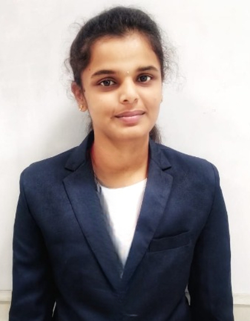

Pavithra Ponnusamy

Summary
ECE graduate skilled in IoT, hardworking learner, nature lover, hackathon participant, passionate about innovation, and deeply family-oriented.
Educational Qualification
- Undergraduate in Bachelor of Engineering- Electronics and Communication Engineering with 78% (2024) from KGISLInstitute of Technology- Coimbatore
- Higher Secondary Education (2020) With 65%, St. Joseph of Cluny Matric Higher Secondary School, Neyveli
- Secondary Education (2018) With 75%, St. Joseph of Cluny Matric Higher Secondary School, Neyveli.
Area of Interest
- IT Services
- Analyst
- Networking
- Project Management
- Decision Making
Skills
- MS Excel
- Internet of Things - IoT
- Network Simulator
- Embedded Systems
- Web Development
Internship
Hobbies
Contact